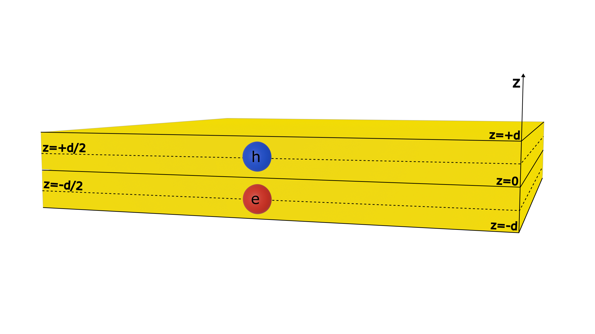

From moiré electrons and holes to moiré excitons in two-dimensional semiconductor heterobilayers
Nomes dos autores
29/05/2025
1. Introduction to Moiré Patterns in 2D Materials
van der Waals bilayers

moiré pattern
moiré superlattice
2. Motivation and Problem Statement
Recent experiments on $WSe_2/WS_2$ heterostructures provide strong evidence of the existence of electron-hole pairs that are in-plane polarized by the moiré pattern.
Recent experiments on $WSe_2/WS_2$ heterostructures provide strong evidence of the existence of electron-hole pairs that are in-plane polarized by the moiré pattern.
Recent experiments on $WSe_2/WS_2$ heterostructures provide strong evidence of the existence of electron-hole pairs that are in-plane polarized by the moiré pattern.